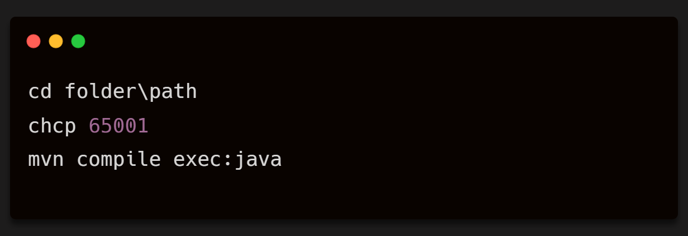

CarObka ir Java konsoles lietotne, kas paredzēta automašīnu entuziastiem, lai pārvaldītu savu iecienītāko automašīnu kolekciju, apskatītu detalizētu informāciju par transportlīdzekļiem un izmantotu praktiskus aprēķinus, kas palīdz izvēlēties izdevīgāko auto.
Galvenās funkcijas:
Lietotāji tiek sadalīti trīs lomās:
Lejupielādēšanas soļi:

Sistēmas prasības:
Šajā sadaļā jābūt paskaidrojumam par to, kā lietot programmu. Tā kā tā ir konsoles lietotne, var iekļaut: